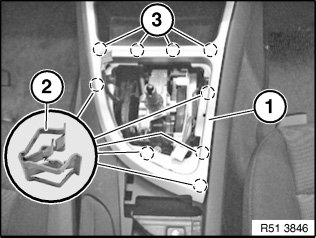
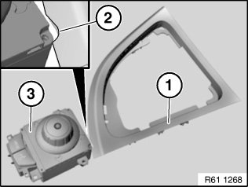

51 16 210 Removing and Installing/Replacing Trim For Selector Lever
51 16 210 Removing and installing/replacing trim for selector lever

IMPORTANT:
- Risk of damage.
- When working on trim panel components, make sure that the sensitive surfaces are not scratched or damaged.

Necessary preliminary work:
- Remove gaiter for gearshift lever
- Depending on equipment specification:
- Remove controller

Pull trim (1) upwards and thereby release from clamps (2) and latch mechanisms (3).
Installation note:
Cables must not be jammed.
Clamps (2) and latch mechanisms (3) must not be damaged.
If replacing with controller version:

Provide trim (1) with recess (2) for controller (3).
NOTE: Recess (2) is marked on the underside of the trim (1).